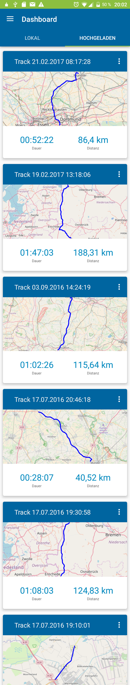
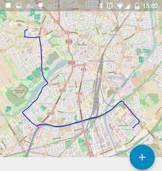
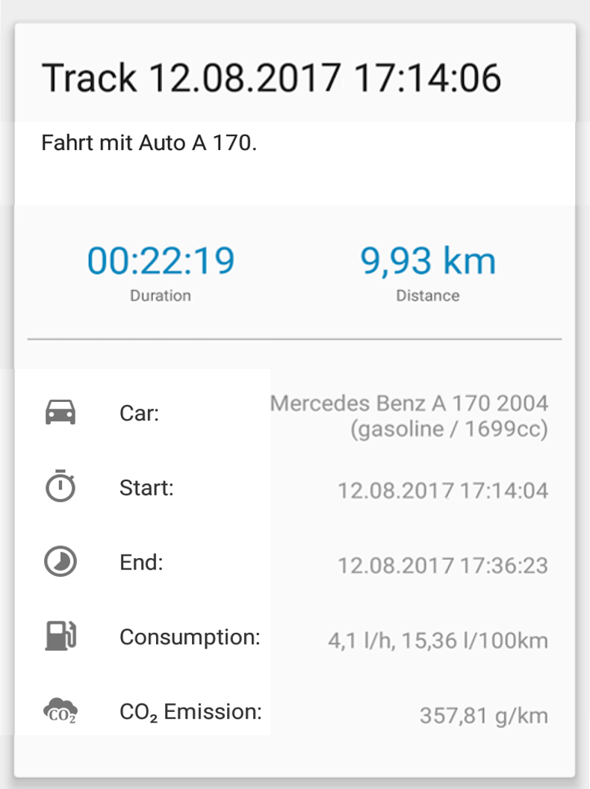
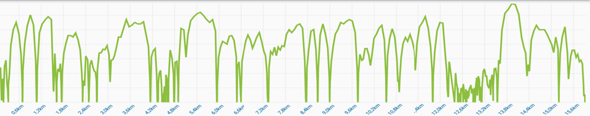
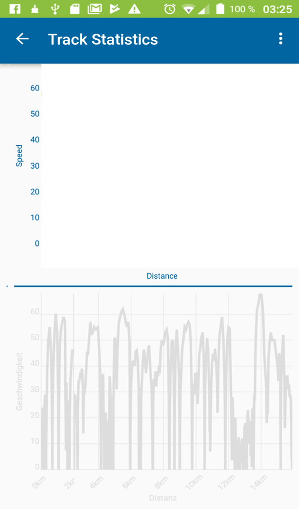
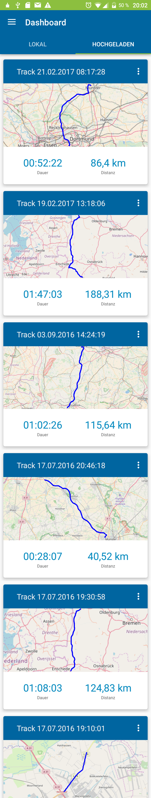
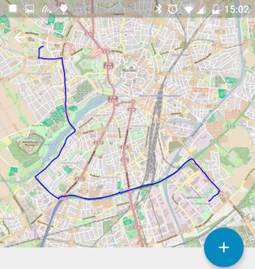
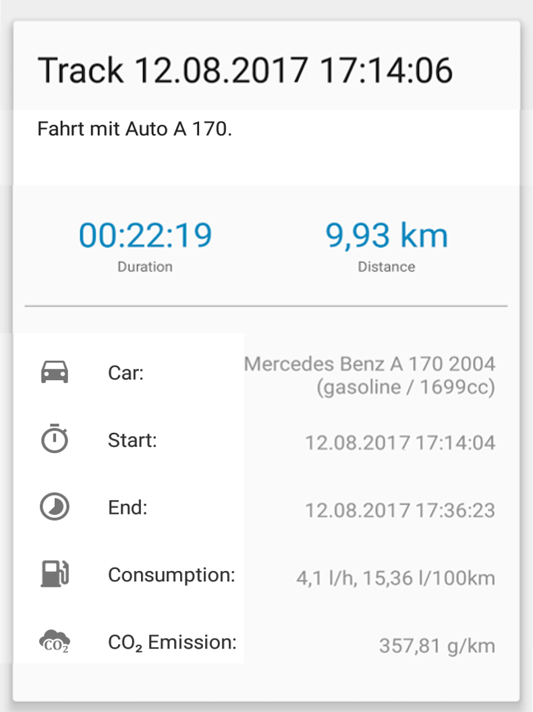
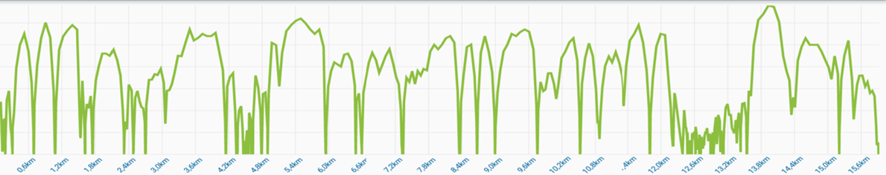
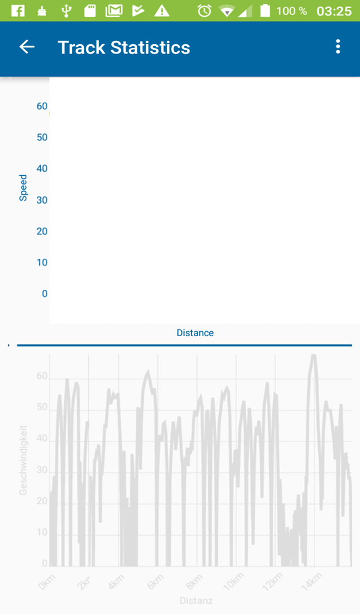

Die Citizen-Science cs.text
cs.text2
cs.text3
 









Die Citizen-Science cs.text
cs.text2
cs.text3
Die Citizen-Science cs.text
cs.text2
cs.text3
platform.contains
platform.one
platform.two
platform.three
funding.citram.text1funding.citram.text2funding.citram.text3
funding.citram.text4 funding.citram.text5funding.citram.text6funding.citram.text7funding.citram.text8
funding.bigiot.desc
funding.tscmg.desc

funding.indiegogo.desc
Die Stadt Krefeld nimmt als eine von drei Städten in Deutschland an einem neuen Verkehrsprojekt teil. Dabei soll das Fahrverhalten von Autofahrern per App so gesteuert werden, dass sie auf einer Grünen Welle durch die Stadt kommen, ohne anzuhalten.
Westdeutscher Rundfunk vom 13. März 2020

CITRAM greift aktuelle Probleme des städtischen Verkehrsmanagements auf und erforscht in der Zusammenarbeit mit Bürgern und Mitarbeitern der Städte Hamm, Krefeld und Chemnitz neue Wege zur Unterstützung der Qualitätssicherung der Ampelsteuerungen. Gleichzeitig bietet es den engagierten Bürgern in Chemnitz, Krefeld und Hamm über eine Smartphone‐App die Möglichkeit, ihr Fahrverhalten an Grüne Wellen anzupassen und umweltschonend und treibstoffsparend zu fahren.
TSC, Beratende Ingenieure für Verkehrswesen vom 17. Juni 2019
Mönchengladbach als europaweites Vorbild - dazu gehörte bis vor einigen
Jahren fast viel Fantasie. Die Untersuchung der Grünen Welle in der Stadt mit Hilfe von 150
Autofahrern im vergangenen Jahr ist aber europaweit neu. "Das hat auch schon zu Anfragen aus
anderen Städten geführt", sagte der zuständige Technische...
Andreas Gruhn in “RP-online” Blogeintrag vom 20.09.2017
Die Stadt Mönchengladbach analysiert, wie der Verkehrsfluss
verbessert werden kann. Weil fließender Verkehr deutlich
weniger Schadstoffe verursacht als Stop-and-go, soll die
Optimierung des Verkehrs dazu beitragen, Diesel-Fahrverbote
zu verhindern...
Lothar Becker im “heute journal” Ausgabe vom 04.09.2017